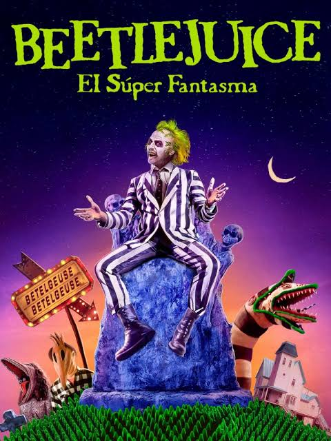
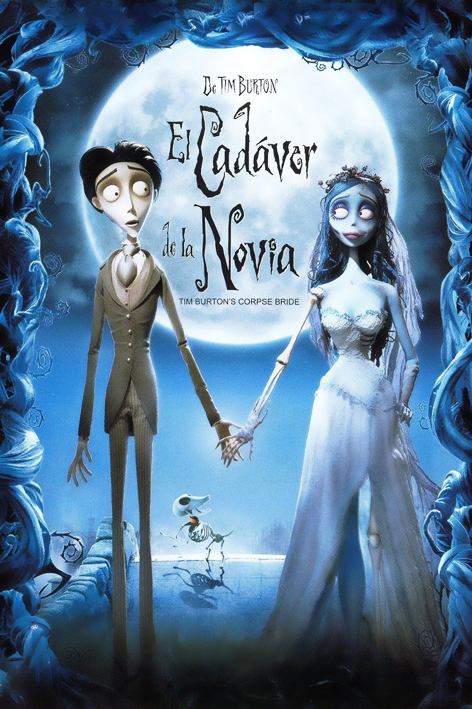
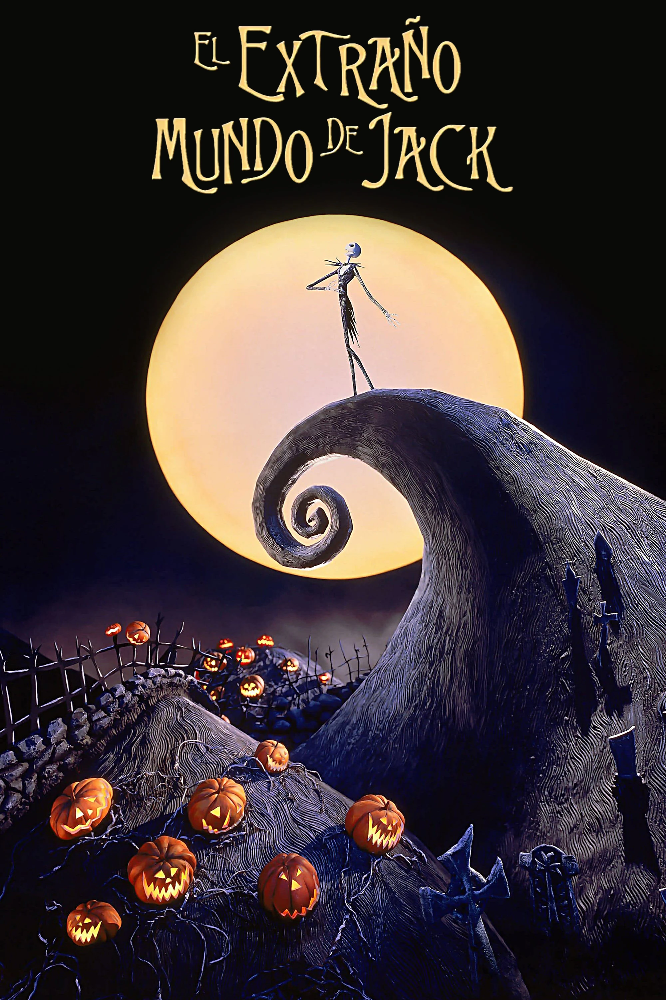
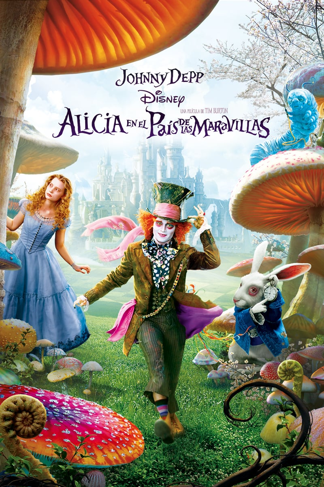
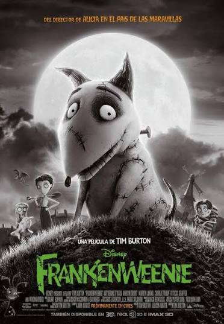

011988 · COMEDIA FANTÁSTICA
Beetlejuice
Una pareja de fantasmas contrata a un espíritu travieso para intentar recuperar su hogar después de que una nueva familia se muda allí.
UN VIAJE POR LO EXTRAORDINARIO
Donde lo oscuro se vuelve hermoso, los monstruos tienen sentimientos y lo diferente encuentra su lugar.
 DARK
DARKDETRÁS DE LA OSCURIDAD
Tim Burton es un director, productor, guionista y artista estadounidense conocido por crear mundos fantásticos, personajes particulares y ambientes góticos.
En sus películas aparecen lugares misteriosos, colores contrastantes, humor oscuro y protagonistas que muchas veces se sienten diferentes a los demás.
Su estilo combina lo extraño con lo emotivo. Por eso, detrás de sus escenarios oscuros también suelen existir historias sobre la soledad, la amistad, la identidad y la necesidad de ser aceptado.
“LO EXTRAÑO TAMBIÉN PUEDE SER BELLO”
Mundos imposibles, sombras alargadas y personajes inolvidables.
LA COLECCIÓN
Entrá en cada historia y descubrí qué la hace especial.

011988 · COMEDIA FANTÁSTICA
Una pareja de fantasmas contrata a un espíritu travieso para intentar recuperar su hogar después de que una nueva familia se muda allí.

022005 · ANIMACIÓN STOP MOTION
Víctor termina accidentalmente unido a una novia del mundo de los muertos y descubre un lugar muy diferente al que imaginaba.
 03
03
1990 · FANTASÍA
Edward es un joven artificial que tiene tijeras en lugar de manos y debe aprender a vivir en una sociedad que no comprende su diferencia.

041993 · ANIMACIÓN STOP MOTION
Jack Skellington, el rey de Halloween, descubre la Navidad y decide intentar organizarla a su manera.

052010 · AVENTURA FANTÁSTICA
Alicia regresa a un mundo extraordinario habitado por criaturas extrañas y personajes inolvidables.

062012 · ANIMACIÓN STOP MOTION
Víctor, un chico apasionado por la ciencia, encuentra una manera extraordinaria de recuperar a su querido perro Sparky.
CRIATURAS EXTRAORDINARIAS
Cada uno tiene una personalidad y una historia diferente.
Un rey curioso que desea descubrir algo nuevo más allá de Halloween.
La novia cadáver, un personaje sensible que busca libertad y comprensión.
Un joven amable cuya apariencia hace que otros lo juzguen sin conocerlo.
Un espíritu impredecible que convierte cada situación en un caos sobrenatural.
DETALLES DEL UNIVERSO BURTON
Combina sombras, formas exageradas, colores intensos y escenarios que parecen sacados de un sueño.
Muchos protagonistas no encajan en su entorno y buscan ser aceptados sin dejar de ser ellos mismos.
Varias de sus películas animadas usan esta técnica, que crea movimiento fotografiando modelos cuadro por cuadro.
Sus historias mezclan lo inquietante con situaciones cómicas, fantásticas y emotivas.
PONÉ A PRUEBA TUS CONOCIMIENTOS
Respondé las preguntas y descubrí cuánto sabés de sus películas.
FIN DEL RECORRIDO
Un homenaje al cine fantástico y a los mundos creados por una imaginación fuera de lo común.